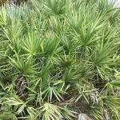
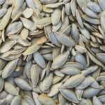
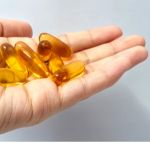

Bem-estar Masculino: Compreendendo a Saúde da Próstata através da Nutrição
Conselho Editorial Portal BioMed
Revisado por especialistas em bem-estar e nutrição

À medida que os homens avançam na idade, é comum procurar formas de manter a vitalidade e o equilíbrio corporal. A glândula prostática é um ponto central da saúde masculina, e a ciência nutricional tem explorado diversos compostos que podem apoiar o seu funcionamento normal.
O Enfoque da Nutrição Preventiva
Diferentes estudos sugerem que a manutenção de um estilo de vida saudável e a ingestão de fitonutrientes específicos podem contribuir para o equilíbrio hormonal e para uma resposta saudável do organismo face ao passar do tempo.
Fitonutrientes e Bem-estar: O que diz a ciência?
A pesquisa em nutrição identificou ingredientes naturais que, como parte de uma dieta equilibrada, são valorizados pelo seu papel na saúde do homem.

Saw Palmetto
Extrato botânico tradicionalmente estudado pela sua interação com o metabolismo hormonal masculino.

Semente de Abóbora
Fonte de zinco e fitoesteróis, elementos chave para a manutenção dos tecidos urológicos.

Zinco e Selênio
Minerais essenciais que contribuem para a proteção das células face ao dano oxidativo.
Rumo a uma Qualidade de Vida Sustentável
Adotar hábitos conscientes hoje é o melhor investimento para o futuro. A ciência nutricional oferece um caminho complementar para aqueles que procuram otimizar o seu bem-estar de forma natural e fundamentada.
Ferramenta de Orientação Informativa
Para ajudá-lo a compreender melhor os pilares da nutrição masculina, preparamos um breve guia interativo.
Acessar o Guia Interativo →*Esta ferramenta tem fins exclusivamente informativos e educativos.
Conclusão
O bem-estar é um processo contínuo. Manter-se informado com fontes baseadas em evidências e consultar regularmente profissionais de saúde são as chaves para uma vida plena e saudável em todas as fases.
Referências: Estudos sobre Nutrição Humana e Suplementação Masculina / Investigação Portal BioMed. Este site não garante resultados específicos e a informação não deve ser considerada como aconselhamento médico.
Sofrendo com Formigamentos e Queimação nos Pés e Mãos?
A neuropatia periférica pode acabar com o seu sono e qualidade de vida. Nossa equipe clínica publicou um laudo detalhado sobre um novo suplemento natural neurotrópico que está ajudando a restaurar a saúde dos nervos no Brasil.
Ver Análise Completa do Especialista →